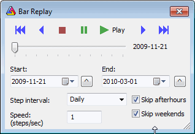

Bar Replay tool is available from Tools->Bar Replay menu. Bar Replay feature plays back data for all symbols at once with user-defined speed. It means that data for all symbols will end at specified "playback position". This affects all formulas (no matter if they are used in charts (indicators) or auto-analysis).

Navigation bar:
Slider bar - allows to see the playback progress as well as MANUALLY move back and forward by dragging the slider thumb.
Start/End - controls provide start and end simulation dates. The playback works so that all data up to currently selected "Playback position" are visible. Data past this position are invisible. "Playback position" can change from user-defined "Start" to "End dates". The small ^ buttons on the right side of Start/End date fields allow to set Start/End to currently selected date on the chart.
Step interval - defines the interval of the step. The recommended setting is the base interval of your database. So if you have a 1-minute database, the step interval should be 1 minute. If you have an EOD database, the step interval should be daily; however, it is allowed to select higher step intervals. Note that chart viewing interval is independent of that. So you can play back a 1-minute database and watch 15-minute bars (they will look real - building the last "ghost" bar as new data come in)
Speed parameter defines step frequency. It means how many steps will be played back within one second. Default is 1. Maximum is 5; minimum is 0.1. If you select 3, for example, AmiBroker will play one step every 0.333 sec, giving a total of 3 steps per second.
Skip after-hours - when turned on, playback skips hours outside regular trading hours as defined in File->Database Settings->Intraday Settings
Skip weekends - when turned on, playback skips Saturdays and Sundays
To enter Playback mode - press PLAY or PAUSE buttons - then data are truncated at current "playback position".
To exit Playback mode - press STOP button or close Bar Replay dialog - the full data set will be restored.
Note that playback simulation is done internally and the database is kept
untouched in fact (all data are still visible in Quote Editor), so there is
no risk in using Bar Replay.